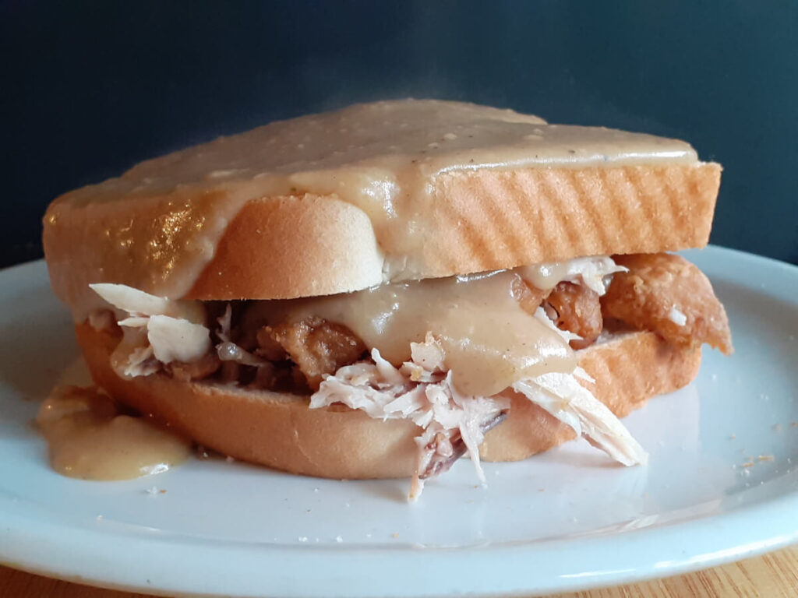

Bread and Chicken Gravy
Bread and chicken gravy is a comforting, quick meal made with soft slices of bread and flavorful homemade chicken gravy.
It's perfect for breakfast, lunch, or a light dinner, and it's super easy to prepare!

Recipe Information
Preparation time: 10 minutes
Cooking time: 15 minutes
Servings: 2
Difficulty: Beginner
Ingredients
- 4 slices of bread
- 1 tablespoon oil or butter
- 1 small onion, finely chopped
- 1 clove garlic, minced
- 1 cup cooked shredded chicken
- 1 tablespoon flour
- 1 cup chicken broth or water
- Salt and pepper to taste
- Optional: chopped parsley for garnish
Instructions
- Heat oil or butter in a pan over medium heat.
- Add the chopped onion and garlic, and sauté until soft.
- Stir in the flour and cook for 1–2 minutes to form a roux.
- Gradually add chicken broth while stirring to avoid lumps.
- Add the shredded chicken, salt, and pepper. Let it simmer for 5–7 minutes until thickened.
- Toast or warm the bread slices.
- Pour the hot chicken gravy over the bread and garnish with parsley if desired.
- Serve immediately and enjoy!
Tips
For extra flavor, you can add a pinch of paprika or use homemade chicken broth.
If you want a creamier gravy, stir in 2 tablespoons of milk or cream before serving.
Want to try more meals? Visit
Allrecipes.